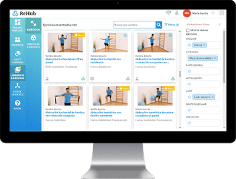
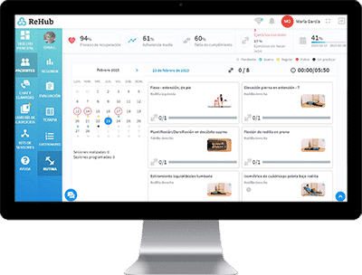
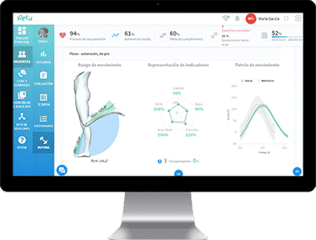
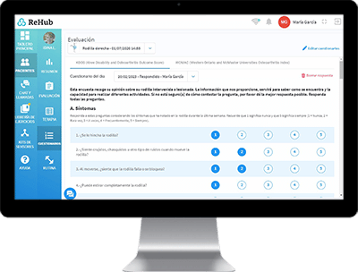
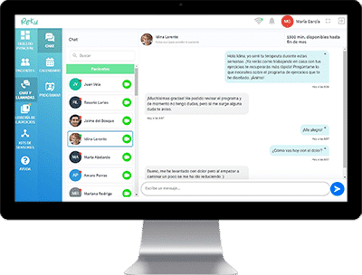

01

Elegí o creá el contenido terapéutico.
Usá tu propio contenido o partí de una biblioteca extensa de ejercicios clínicamente validados.
Infraestructura basada en AI para prescribir ejercicios, monitorear el progreso del paciente y que el profesional pueda tomar las mejores decisiones.
Reku utiliza algoritmos propios para captar en detalle el movimiento del paciente y convertirlo en información accionable. Eso permite seguir la ejecución de los ejercicios con una capa adicional de precisión y consistencia clínica.
El paciente puede realizar la terapia desde su móvil, tablet u ordenador, recibir correcciones en tiempo real y permitir que el profesional acceda a métricas concretas para acompañar el proceso.

Usá tu propio contenido o partí de una biblioteca extensa de ejercicios clínicamente validados.

Definí el plan, la frecuencia y la progresión según el objetivo clínico de cada caso.

Consultá adherencia, ejecución y evolución para ajustar decisiones con más criterio y menos fricción.

Sumá instrumentos de evaluación y puntos de control para enriquecer el monitoreo remoto.

La comunicación directa ayuda a sostener adherencia, resolver dudas y acompañar mejor el tratamiento.